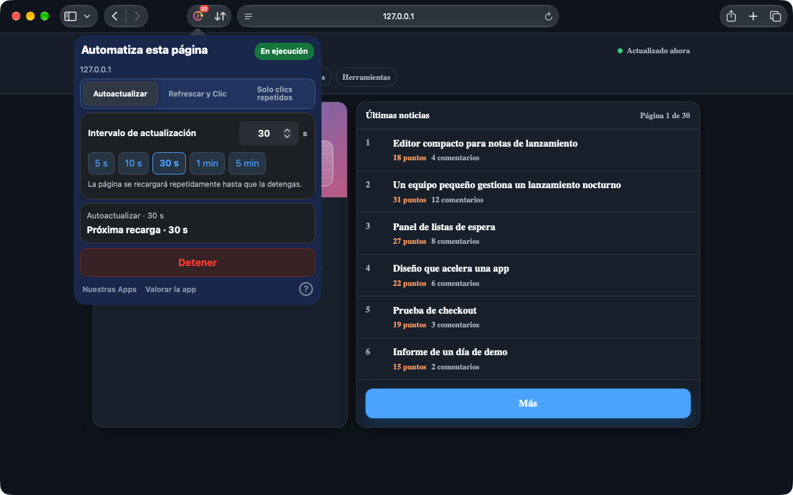
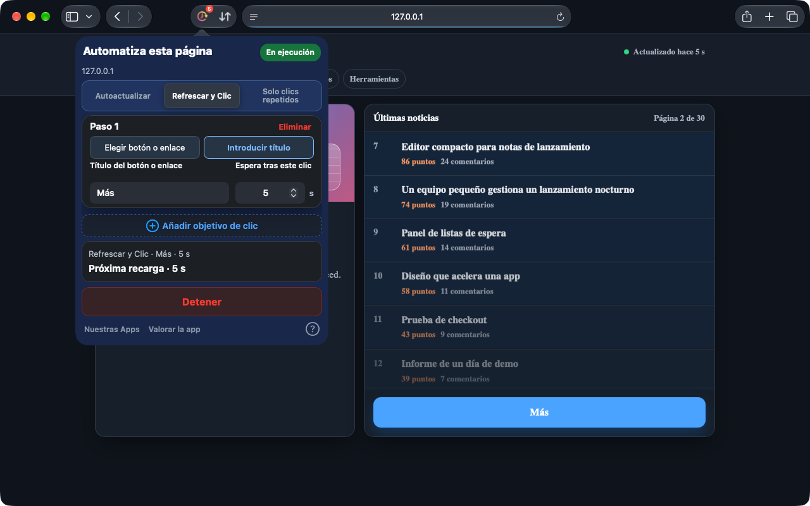
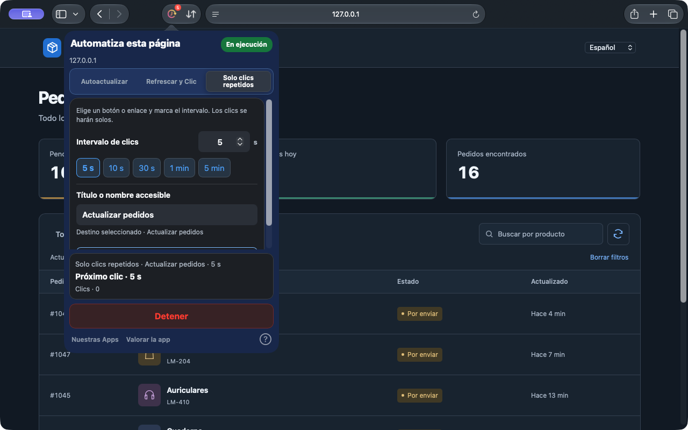

Autoactualizar
Elige un intervalo predefinido o preciso para mantener al día paneles, inventarios y páginas de estado.
Configurar la actualización automáticaSafari en iPhone, iPad y Mac. Chrome en ordenador.
A veces hay que actualizar toda la página. Otras veces basta con un clic. Auto Refresh & Clicker se encarga de esas acciones repetidas en las páginas web de Safari.
En tu navegador. Sin crear una cuenta.
La app de Safari ya permite seleccionar botones con iconos y repetir clics sin recargar la página. Chrome se actualiza por separado; consulta sus funciones en la tienda correspondiente.
Ver cómo funciona


Safari en Mac 1.10.0 · Capturas reales en una página de demostración local
Desde un panel que cambia hasta un botón que pulsas a menudo: elige la tarea adecuada para cada página.
Elige un intervalo predefinido o preciso para mantener al día paneles, inventarios y páginas de estado.
Configurar la actualización automáticaElige un botón o enlace en la página, o escribe su título. Tras actualizar, los clics siguen tu orden, con una espera después de cada paso.
Configurar la actualización con clicsRepite clics sin recargar la página. Selecciona incluso un icono, ajusta el intervalo y deja que la lista se actualice.
Configurar los clics repetidosConfigura en pocos pasos y comprueba el estado fácilmente.
Abre la app después de instalarla. Activa la extensión en los ajustes de Safari y permite el acceso al sitio.
Elige un modo y ajusta el intervalo o la espera tras cada paso. Para hacer clic, selecciona un botón o enlace en la página, o escribe su título.
Inicia y comprueba el estado y la cuenta atrás. Puedes detener la tarea o aplicar cambios cuando quieras.
No necesitas una cuenta web. La configuración se guarda localmente y las tareas se gestionan por pestaña.
En iPhone y iPad, mantén Safari en primer plano. El sistema puede suspender las tareas en segundo plano o con el dispositivo bloqueado.
PrivacidadLas tareas se ejecutan en páginas de Safari o en la extensión de Chrome para ordenador. No controla otras apps ni interfaces del sistema.
Abre una vez la app instalada y revisa Ajustes de Safari → Extensiones. Usa Safari 15.4 o posterior. Si sigue sin aparecer, contacta con soporte e indica las versiones de macOS, Safari y la app, y el origen de instalación.
No se garantiza el funcionamiento continuo en segundo plano. iOS y iPadOS pueden suspender las tareas del navegador. Mantén Safari en primer plano.
En la versión actual de Safari, edita la configuración y aplica los cambios. El resumen muestra la tarea activa. Pulsa Detener para finalizarla.
Safari en iPhone, iPad y Mac. Chrome en ordenador.
Consulta el precio y la compatibilidad en cada tienda.